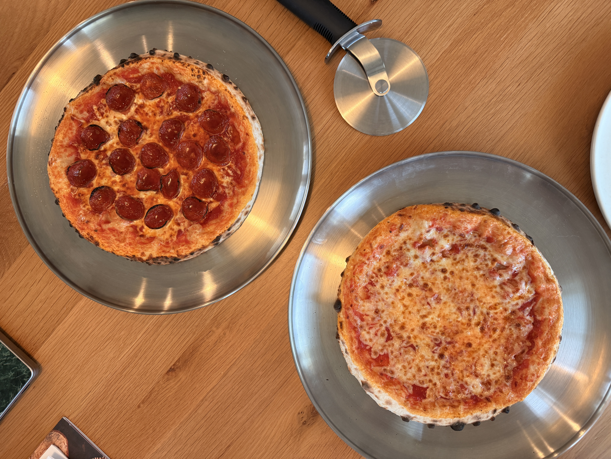
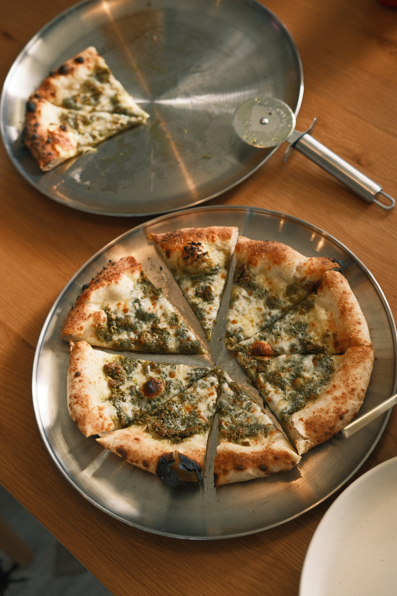
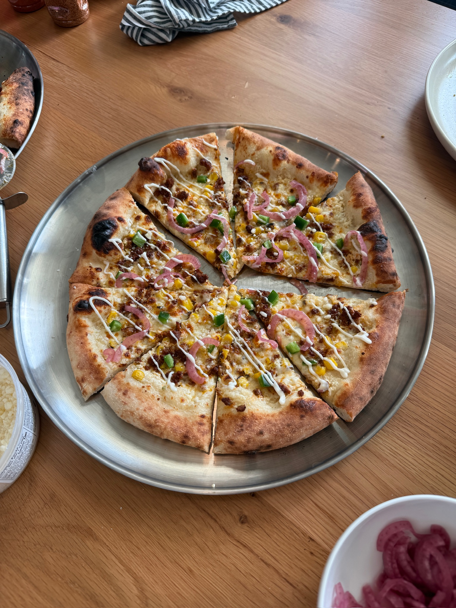
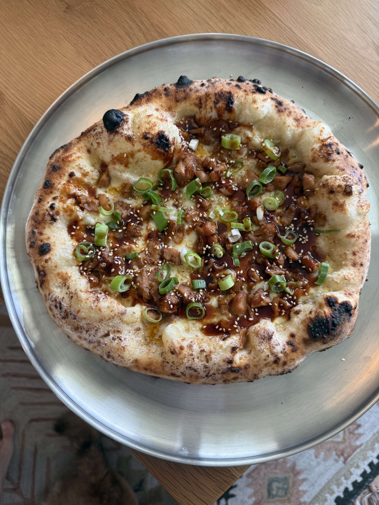

Pizza
Two years (and counting) of chasing the perfect crust. Every pie starts with scratch-made dough and sauce, then takes a turn toward the unexpected — think Mexican street corn or garlic hoisin chicken alongside the classics.



